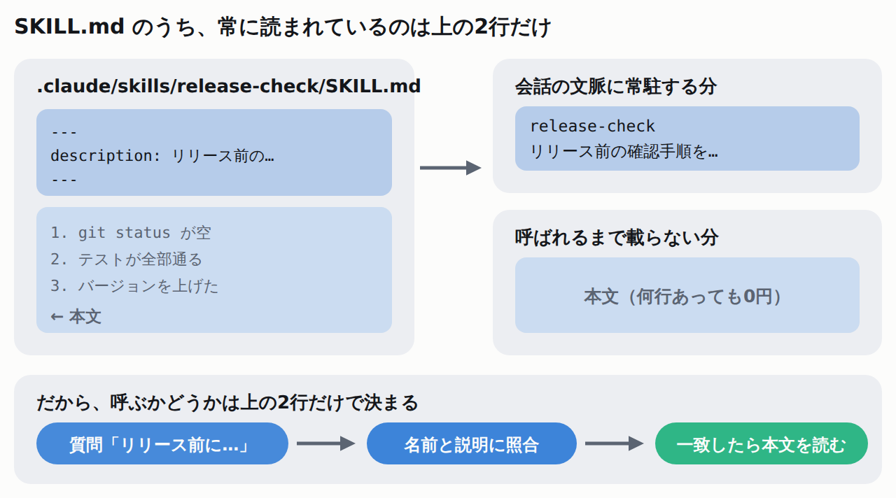

⭐ 3行で言うと
スキルはフォルダ1つとファイル1枚。 設定画面もインストールもありません。書いた内容はその場で反映されます。 置いただけでは自動で呼ばれません。 同じ質問を60回投げて数えました。呼ばれる条件はフォルダ名とdescriptionの言葉 でした。 逆に、勝手に呼ばれるのは1行で止まります。 デプロイのように事故る手順は止めておきます。
目次
スキルはフォルダ1つとSKILL.md 1枚 実験1: 説明を雑にしても呼ばれた（予想が外れた） 実験2: フォルダ名を無意味にしたら落ちた 実験3: 勝手に呼ばれるのを止める1行 作るときの確認項目 参考文献
1 スキルはフォルダ1つとSKILL.md 1枚
毎回同じ指示を貼っているなら、それがスキルにする対象
「リリース前にこれとこれを確認して」を毎回打ち込んでいるとします。それをファイルに1回書いておくと、次から名前を呼ぶだけで済みます。
作り方は、決まった場所にフォルダを作って、その中に SKILL.md を1枚置くだけです。編集はその場で反映されます。
ただし.claude/skills/ 自体を新しく作ったときだけは、いったん終了して開き直してください。
置き場所（プロジェクト用）
your-project/
└── .claude/
└── skills/
└── release-check/
└── SKILL.md .claude/skills/release-check/SKILL.md
---
description: リリース前の確認手順を返す。ユーザーがリリース前に何を確認するか、デプロイしてよいか、公開前のチェックについて尋ねたときに使う。
---
リリース前に、次の3つをこの順で確認する。
1. `git status` が空であること
2. テストが全部通ること
3. バージョン番号を上げたこと
確認した内容を箇条書きで答える。 descriptionは改行せず1行で書きます。 長くなるので、上の枠は横に少しスクロールします。
上の --- で囲まれた部分。 フロントマターと呼びます。いつ使うか を書く場所です。その下。 本文です。実際にやってほしいことを、普通の日本語で書きます。
置き場所は2つ。自分だけか、チーム全員か
同じ書式のまま、置く場所を変えるだけで効く範囲が変わります。プロジェクト用に置いてコミットすれば、チーム全員に配れます。
種類 置き場所 効く範囲
個人用 自分の全プロジェクト ~/.claude/skills/名前/SKILL.md自分だけ。どのプロジェクトでも使える
プロジェクト用 リポジトリに入れる .claude/skills/名前/SKILL.mdこのリポジトリだけ。コミットすれば全員に配れる
手で呼ぶときは /release-check と打ちます。この名前はフォルダ名から決まります 。name: をフロントマターに書いても、そちらは一覧に出る表示名になるだけです。
公式ドキュメント「How a skill gets its command name」の原文
In a personal or project skill, `name` sets only the display label shown in skill listings, and the command still comes from the directory name.
CLAUDE.mdに書くのと何が違うのか — 本文は使うまでタダ
同じ手順を CLAUDE.md に書いても動きます。違うのはお金と場所の使い方 です。
CLAUDE.md は毎回まるごと読み込まれます。スキルは、名前と説明だけが常に読まれ、本文は呼ばれたときにだけ読み込まれます。
公式ドキュメント冒頭の原文
Unlike CLAUDE.md content, a skill's body loads only when it's used, so long reference material costs almost nothing until you need it. つまり、長い手順書を置いても普段の負担はゼロです。そのかわり呼ばれなければ何も起きません 。ここからが本題です。

常に読まれているのは名前と説明の2行だけ。呼ぶかどうかもこの2行で決まる。
2 実験1: 説明を雑にしても呼ばれた（予想が外れた）
「説明が雑だと呼ばれない」と予想して測ったら、外れました
公式ドキュメントには、descriptionが呼び出しの判断材料だと書かれています。ならば雑な説明のスキルは呼ばれないはずです。確かめました。
用意したのは1行しか違わない2つのプロジェクト です。本文もフォルダ名も完全に同じにしました。
A: よくある書き方（何をするかだけ）
---
description: リリースのメモ
--- B: いつ使うかまで書いた版
---
description: リリース前の確認手順を返す。ユーザーがリリース前に何を確認するか、デプロイしてよいか、公開前のチェックについて尋ねたときに使う。
--- どちらのフォルダ名も release-check にしました。ここが後で効いてきます。
測り方 — 「Skill という道具が呼ばれたか」を数える
同じ質問を10回ずつ投げます。人の感想ではなく、機械が読める記録で数えます。
Claude Codeは -p を付けると対話画面なしで動きます。--output-format stream-json を足すと、途中で使った道具が1行ずつJSONで出てきます 。
1回分の実行（実際に叩いたコマンド）
claude -p "リリース前に何を確認すればいい？" \
--output-format stream-json --verbose 出てくるJSONの一部（実際の出力）
{"type":"assistant","message":{"content":[
{"type":"tool_use","name":"Skill",
"input":{"skill":"release-check"}}]}}
この "name":"Skill" が出たかどうかで判定します。 出ていれば自動で呼ばれた、出ていなければ呼ばれなかった、です。毎回まっさらな会話にします。 --session-id に毎回新しいIDを渡し、前の回を引きずらないようにしました。
結果 — 差がまったく出なかった
実験1の結果（--> の行が集計。中略あり）
$ ./run_all.sh
A 曖昧 1回目: 呼ばれた
A 曖昧 2回目: 呼ばれた
(中略)
--> A 曖昧 oooooooooo 10/10
--> B 具体 oooooooooo 10/10 雑な説明のほうも全部呼ばれました 。予想は外れです。
Q. なぜ雑な説明でも呼ばれたのでしょう?
10回では回数が少なすぎたから
フォルダ名 release-check が説明になっていたから
description は実際には読まれていないから
フォルダ名です。判断材料になるのは説明だけではなく、名前と説明の両方 です。公式ドキュメントには、一覧に必ず全部のスキル名が入ると書かれています。release-check（リリース確認）という名前自体が、すでに「いつ使うか」を語っていました。
公式ドキュメント「Skill descriptions are cut short」の原文
The listing always contains every skill name, but if you have many skills, Claude Code shortens descriptions to fit the listing's character budget, which can strip the keywords Claude needs to match your request. 説明は削られることがあるが、名前は必ず残る。つまり名前のほうが確実に効く手がかり です。実験をやり直します。
3 実験2: フォルダ名を無意味にしたら落ちた
変えたのはフォルダ名だけ。description も本文もそのまま
release-check を、意味を持たない memo-1 に変えました。これで名前からは何も読み取れません。
変えたのはここだけ
.claude/skills/release-check/SKILL.md
↓
.claude/skills/memo-1/SKILL.md 実験2の結果（--> の行が集計。中略あり）
(中略)
--> A 曖昧 .o........ 1/10
--> B 具体 oooooooooo 10/10 今度は差が出ました。雑な説明のほう（A）は10回中10回から、10回中1回まで落ちました 。変えたのはフォルダ名だけです。良い説明のほう（B）は10回とも呼ばれたままでした。
名前と説明は、2つで1つの説明文です。 どちらかが「いつ使うか」を語っていれば呼ばれ、両方が黙っていると落ちます。だから名前をケチらないでください。 memo-1 や utils のような名前は、説明を半分捨てているのと同じです。
公式ドキュメント「Skill not triggering」の原文
Check the description includes keywords users would naturally say 「使う人が普段口にする言葉」を入れておけ、ということです。memo-1 は誰も口にしません。
10回で結論を出していいのか（正直な話）
回数は少ないです
1条件あたり10回です。統計としてきちんと差を主張できる回数ではありません。ここで言えるのは「同じ条件でも呼ばれたり呼ばれなかったりする」「その揺れがフォルダ名を変えると出てくる」までです。
毎回同じ数字にはなりません
呼ぶかどうかはモデルの判断なので、同じ入力でも結果は揺れます。手元で同じ手順を走らせても数字は一致しないはずです。検証一式を _labs/ に置いてあるので、回数を増やして測り直せます。
4 実験3: 勝手に呼ばれるのを止める1行
逆の困りごと — デプロイのスキルを勝手に呼ばれたら事故
ここまでは「呼ばれない」話でした。逆もあります。本番に反映する手順を、AIの判断で始められたら困ります。
これはフロントマターに1行足すだけで止まります。
Bに1行足しただけ（+ の行）
---
description: リリース前の確認手順を返す。…
+disable-model-invocation: true
--- 説明はさっきの「良い版」のまま、この1行だけを足して同じ質問を10回投げました。
実験3の結果（--> の行が集計。中略あり）
(中略)
--> A 自動ON oooooooooo 10/10
--> B 自動OFF .......... 0/10 1回も呼ばれませんでした。 説明は「良い版」のままで、足したのは1行だけです。
公式ドキュメント「Control who invokes a skill」の原文
disable-model-invocation: true: Only you can invoke the skill. Use this for workflows with side effects or that you want to control timing, like /commit, /deploy, or /send-slack-message. You don't want Claude deciding to deploy because your code looks ready.
手で呼ぶ分には今までどおりです。 /memo-1 と打てば動きます。止まるのはAIが自分で判断して呼ぶ経路だけ です。おまけに軽くなります。 この1行を足すと説明文が常駐しなくなるので、そのぶん毎回の読み込みが減ります。
止め方は2種類ある。逆向きの指定もできる
「自分だけが呼べる」の反対に、「AIだけが呼べる」もあります。用語の説明として、たとえば古い仕組みの背景知識のように、人がコマンドとして打つ意味がないもの に使います。
書き方 人が呼べる AIが呼べる
何も書かない 既定 呼べる
呼べる
disable-model-invocation: true デプロイなど事故る手順 呼べる
呼べない
user-invocable: false 背景知識 呼べない
呼べる
参考文献
この記事の主張は、次の資料と自分の実測だけに基づいています。読んでいない資料は引用しません。
一次資料
Anthropic「Extend Claude with skills」Claude Code Docs .
参照箇所を見る
参照箇所: 「How a skill gets its command name」からコマンド名がフォルダ名で決まること、「Control who invokes a skill」から disable-model-invocation と user-invocable の効き方と対比表、「Troubleshooting > Skill not triggering」から呼ばれないときの確認順、「Skill descriptions are cut short」から一覧に必ず全スキル名が入り説明のほうは削られうること、「Live change detection」から編集はセッション中に反映されるが最上位のスキル用ディレクトリを新設したときだけ再起動が要ること（原文: If you create a top-level skills directory that didn't exist when the session started, restart Claude Code so it can watch the new directory.）、冒頭から本文が使用時にだけ読み込まれること。記事に引用した英文は本文から一字も変えずに転記した。
https://code.claude.com/docs/en/skills （2026年8月26日参照）
未確認
同ドキュメント「Inject dynamic context」の !`コマンド` 記法。
なぜ未確認か
本文に !`git log --oneline -1` を書いたスキルを claude -p で呼んだところ、出力が埋め込まれず、モデルが自分でコマンドを実行しようとした。対話画面では試していないため、この機能が動かないとは判断していない。記事本文でもこの記法は使っていない。
https://code.claude.com/docs/en/skills （2026年8月26日参照）
自分の実測
実験1〜3（各条件10回、合計60回）。
環境と測り方
実行日: 2026年8月26日 JST。環境: Linux x86-64 のコンテナ、Claude Code 2.1.245、Python 3.11.15。測り方: claude -p "リリース前に何を確認すればいい？" --session-id <毎回新規UUID> --output-format stream-json --verbose を各条件10回実行し、tool_use の name が Skill かつ対象スキル名であるものを1回と数えた。記事に貼った出力は、中略を明示した以外は無加工。モデルの判断が絡むため、同じ手順でも数字は毎回揺れる。検証一式は _labs/2026-08-26_skills-trigger/。
自分の意見
「フォルダ名は自分が普段口にする言葉にする」「本番に触る手順は自動起動を切る」は、標準や規格ではなく、上の実測をふまえた筆者の運用上の目安です。
この記事は2026年8月26日時点の情報です
公開: 2026年8月26日 JST